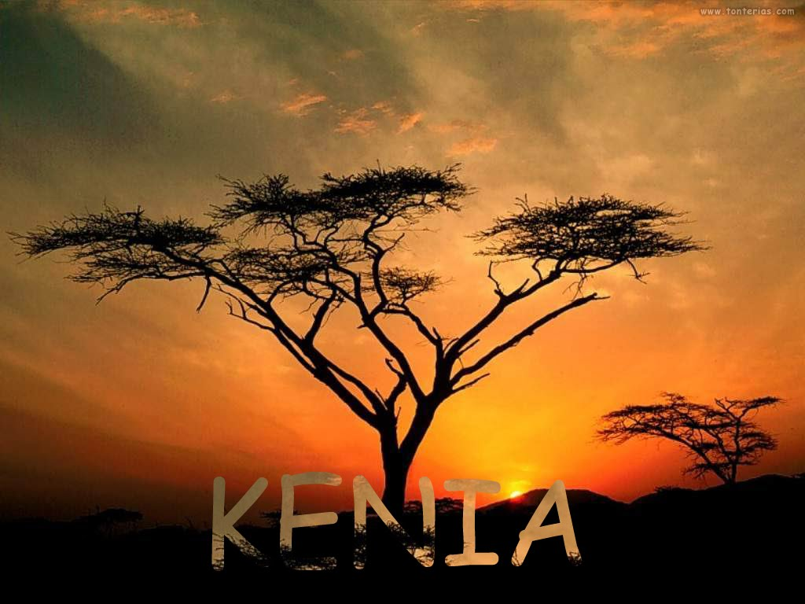

Kenija- avantura na svakom koraku
Da li ste spremni da doživite nezaboravnu avanturu? Svoj godišnji odmor poverite nama i obezbedićemo vam provod koji se ne zaboravlja. Ono što nudimo je jedinstvena prilika da sami kreirate aranžman prema svojim potrebama i željama.
Da li želite da razbijete monotoniju godišnjih odomora koji se sastoje od izležavanja na plaži i lenčarenja? Želite da vidite nešto novo i uzbudljivo, da upoznate drugačiju kulturu, da vam se letovanje pretvori u avanturu koju ćete pamtiti. Kenija je pravo mesto za vas ako se pronalazite u ovom opisu. Ona vam nudi nešto potpuno drugačije od uobičajenih letovanja. U mogućnosti ste da sami birate sve elemente aranžmana u skladu sa vašim željama i potrebama ukoliko se odlučite za individulano putovanje. Tako ćete doživeti Keniju na svoj način, baš onako kako vi želite. Pored svega toga uštedećete i vreme, jer svu odgovornost kreiranja aranžmana prepuštate nama, vaše je samo da izrazite svoje želje.
Kenija je zemlja neprocenjivih prirodnih lepota, nacionalnih parkova punih raznolikim biljnim i životinjskim vrstama, fascinantnih plaža i vodopada. Kenija je poznata po najboljem safariju gde imate priliku da se provozate džipom i vidite životinje u svom prirodnom staništu. Masai Mara je najpoznatiji nacionalni park i jedan je od najzanimljivijih destinacija za posmatranje divljih životinja. Sa sve ljubitelje prirode ovo je pravi raj na zemlji. Istražite pustinju, popnite se na planinu, posetite nomadska sela i upoznajte se sa tradicionalnom kulturom ili obiđite jezero Turkana. Provedite dan na nekoj od prekrasnih plaža, a svoj doživljaj upotpunite ronjenjem, jedrenjem na dasci, tenisom ili golfom. Kenija je sve ono što jedan avantirista željan novih vidika može da poželi.
Cena ovog putovanja se kreće od 1846 € sa svim taksama.